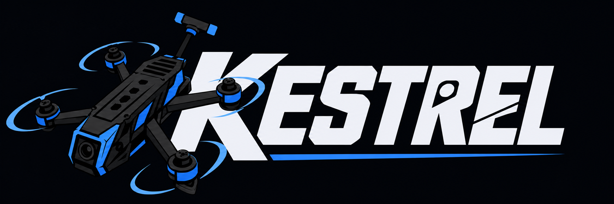
Fly the mission
before you fly the mission.
Drop a pin anywhere on Earth. That coordinate loads in photoreal terrain. Build the aircraft from real parts, build the mission on the real ground, fly it, and get it back scored.
Not a render
Ninety seconds inside a live session.
Every frame captured from the current build. Sound on.
EARTH
Type a grid or drop a pin. That exact street loads in photoreal terrain.
REAL PARTS
Motor, prop, pack, and mass come off the spec sheet. It flies like what you built.
YOUR MISSION
Place objectives, OPFOR, and structures on the real ground, then fly what you built.
SCORED
Objectives, time, and result recorded locally so the next run has something to beat.
Four screens
Pin to takeoff in about a minute.
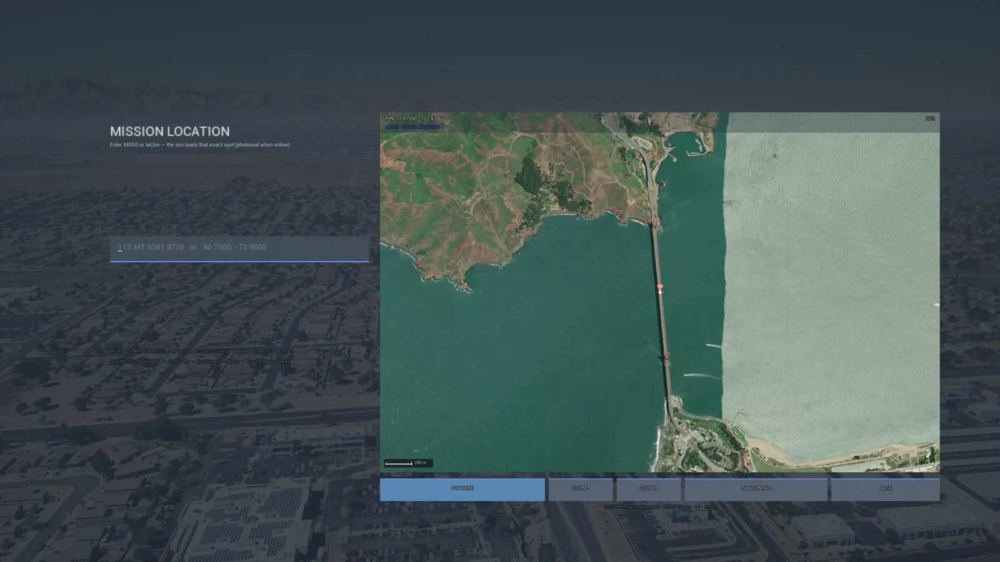
01 · Pick the ground
MGRS, lat/lon, or a pin on the map.
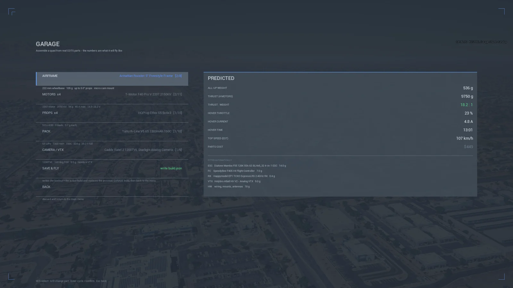
02 · Build the aircraft
Weight, thrust, and endurance resolve as you pick parts.
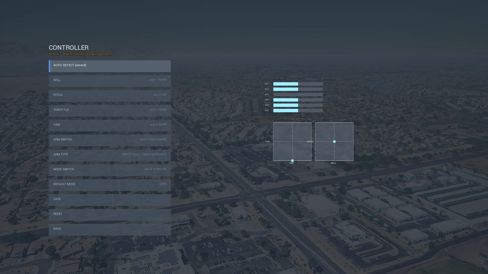
03 · Bind your radio
Your transmitter, your rates, saved once.
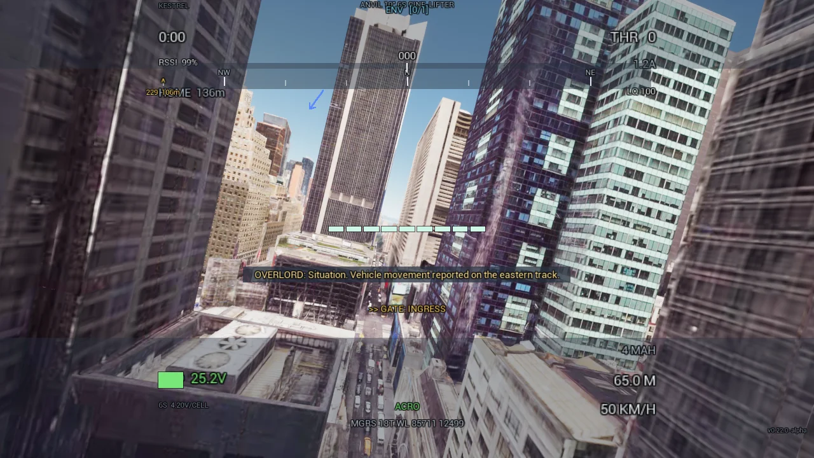
04 · Fly it
Real OSD, real stick time, a score at the end.
Mission builder
Build the mission you actually have to fly.
Objectives, OPFOR, SOF, support, vehicles, structures — placed on the real ground at the coordinate you chose, then saved and flown.
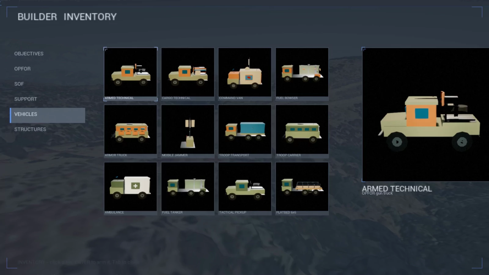
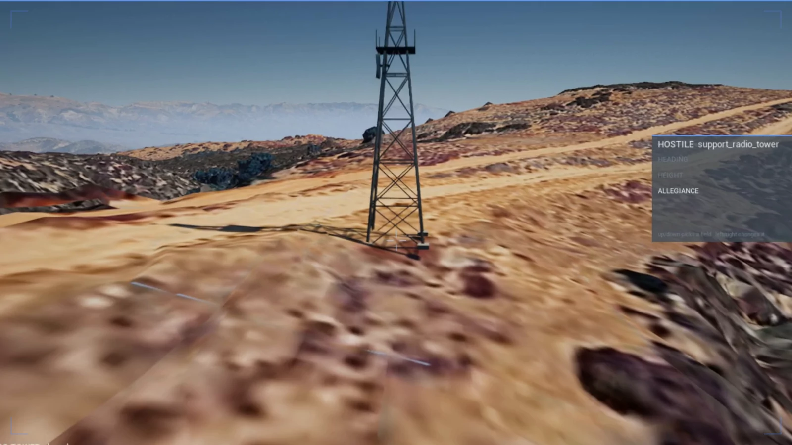
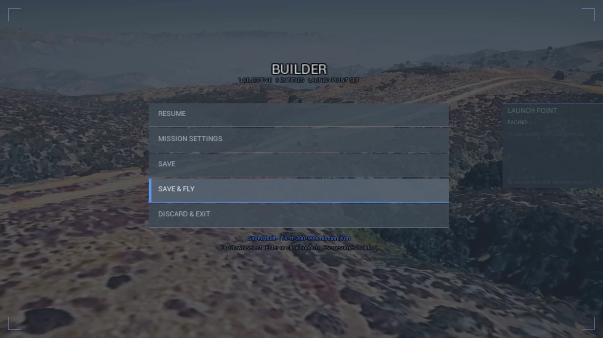
Save & Fly.
Set the launch point and the facing, save the mission, and you are in the air on it. Missions export and import, so the scenario one instructor builds is the scenario the whole cadre flies — and scores against.
The run
Down in the weeds, then on the target.
The terminal leg flies like a one-way attack, because that is what it is. No avoidance, no speed brake, and the impact speed goes in the log.
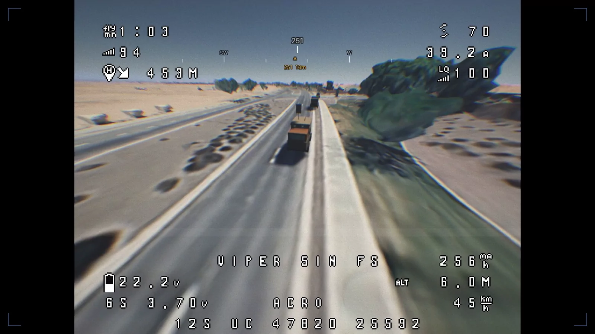
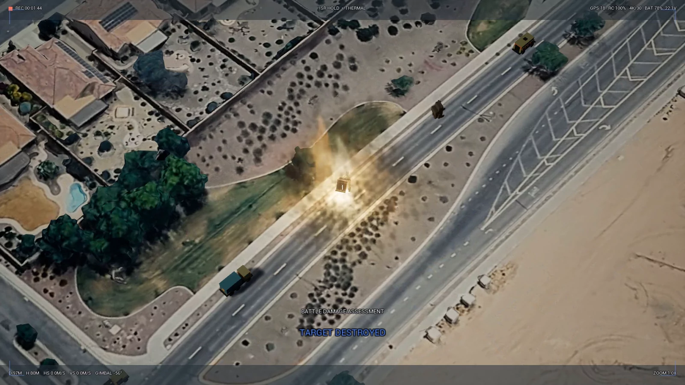
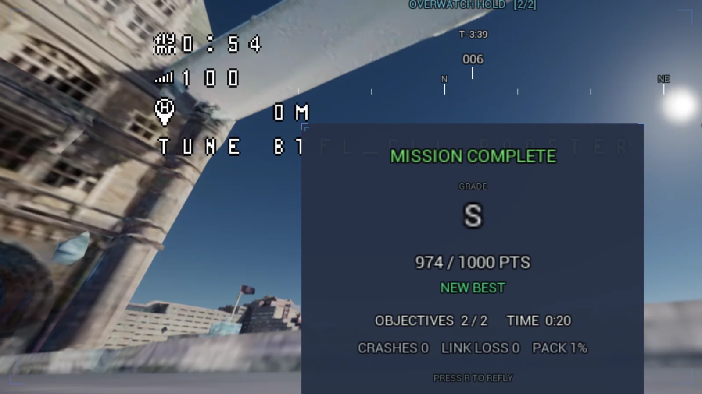
The point
A number to beat.
Objectives hit, time on target, crashes, link loss, pack burned — graded and saved on the machine. Same aircraft, same ground, same objectives, so the second run means something the first one did not.
Anywhere
Your operating area is already in it.
City centre, coastline, industrial site, desert road, open ground — day, dusk, or dark. If it exists, you can rehearse over it.
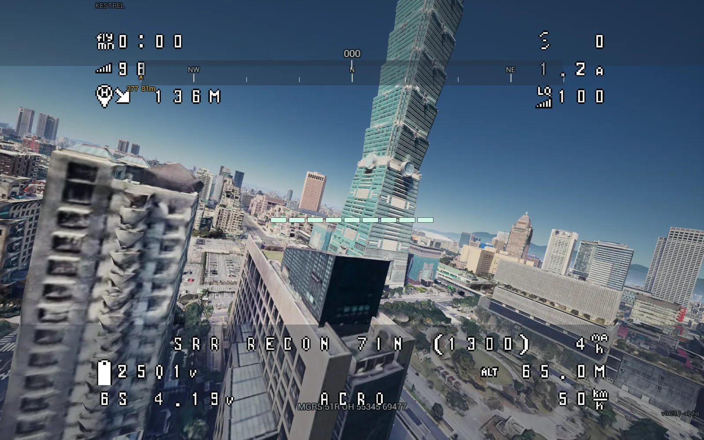
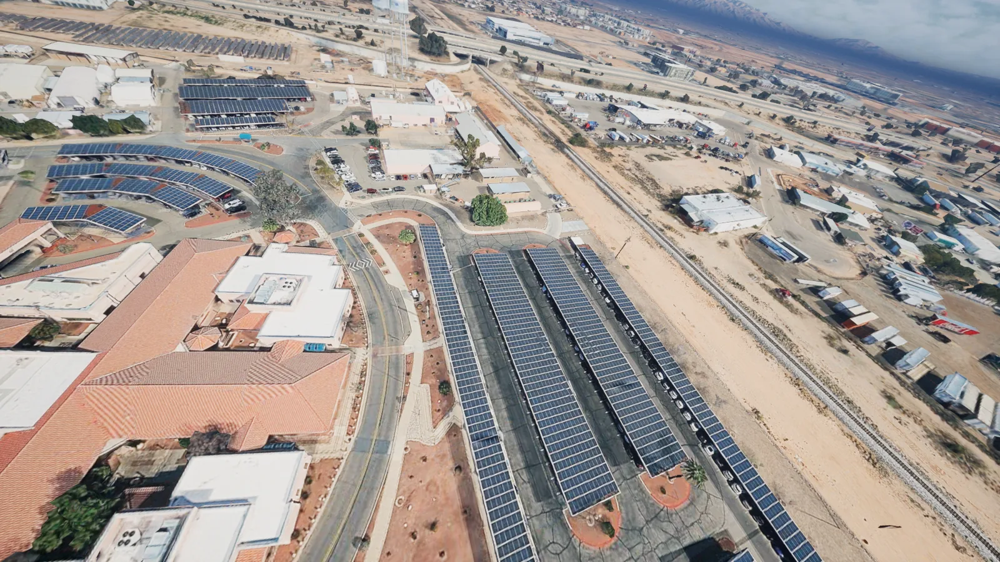
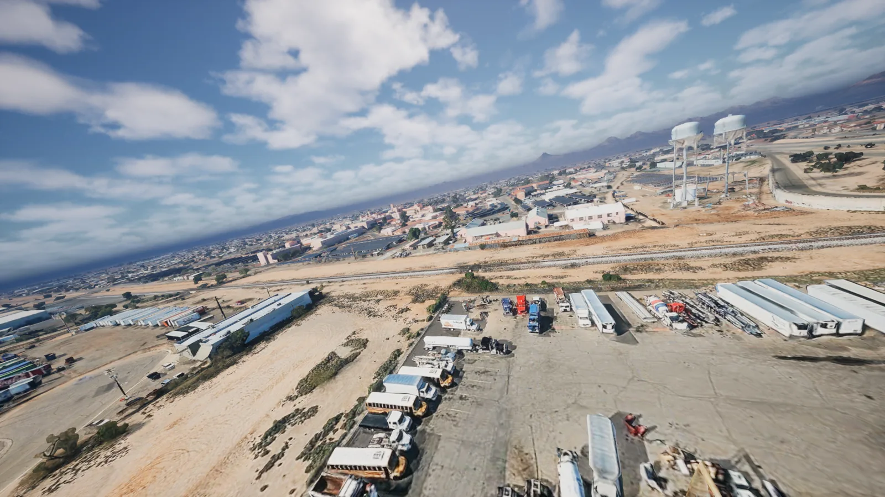
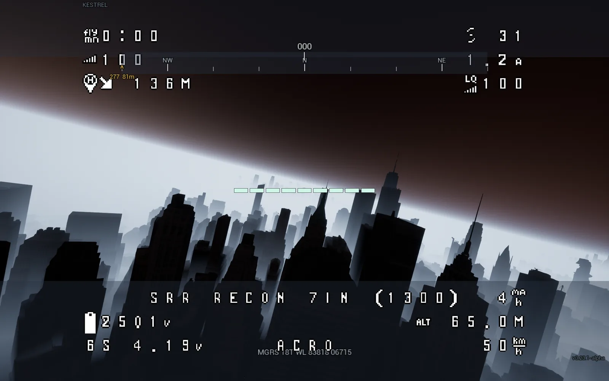
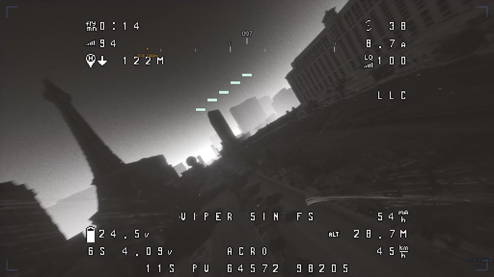
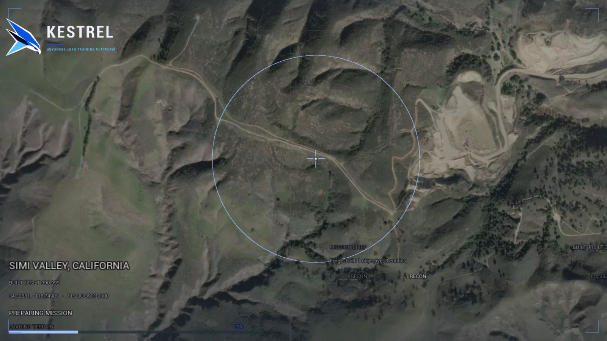
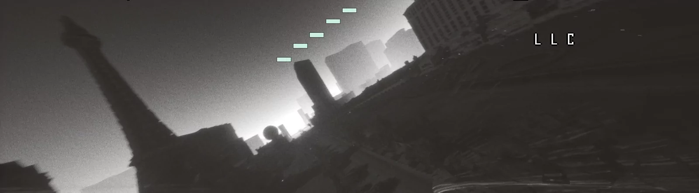
Low light
Then fly it on the night camera.
Past sunset the world actually goes dark, and you switch to the low-light sensor and keep flying — monochrome, blooming on every street light, thirty metres off the deck between buildings. Night currency your crew can build without burning an evening of airspace.
Who flies it
Stick time without burning packs, props, or airspace.
Defense & SOF
Rehearse the ingress, the overwatch, and the terminal leg on the ground you were handed.
Public safety & SAR
Fly the callout over the actual block, at the actual hour, before the callout comes.
Inspection
Practice the dwell and the approach on the site itself, with nothing to hit.
Training cadres
Same aircraft, same ground, same objectives — so the scores mean something.
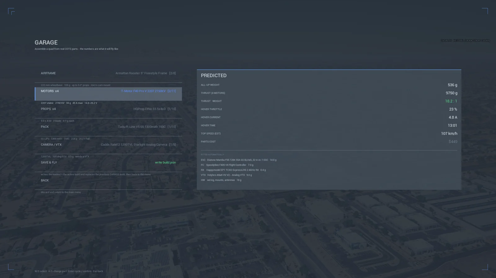
Pairs with COTS ARCHITECT
Plan what you have. Rehearse what you will fly.
Build the aircraft from your own inventory in COTS ARCHITECT, hand it to KESTREL, and the thing you rehearse with is the thing you will actually put in the air.
Explore COTS ARCHITECT →Early design-partner program
Bring one mission we can prove together.
Tell us the aircraft your team flies, the mission you want to rehearse, and one evaluation location. We will scope a controlled pilot with clear success criteria — guided onboarding, early-build access, and direct input into what gets built next.
Windows PC. Photoreal terrain streams over an active connection and is subject to provider coverage; a generated environment covers the gap. Mission files and session records stay on the machine. Scenario effects are training cues, not airworthiness or certification evidence.